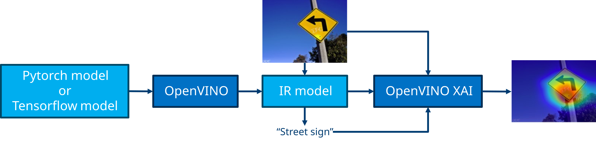
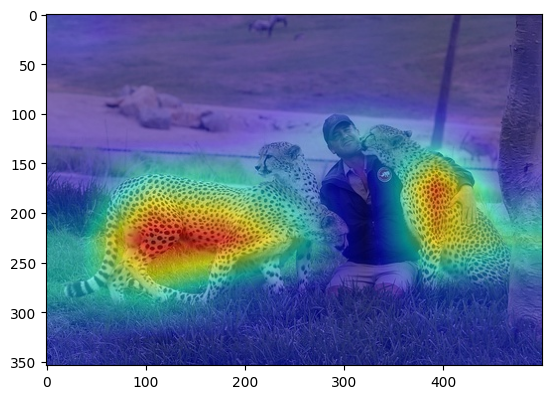

OpenVINO™ Explainable AI Toolkit - OpenVINO XAI#
Features • Install • Quick Start • License • Documentation



OpenVINO™ Explainable AI (XAI) Toolkit provides a suite of XAI algorithms for visual explanation of OpenVINO™ Intermediate Representation (IR) models.
Given OpenVINO models and input images, OpenVINO XAI generates saliency maps which highlights regions of the interest in the inputs from the models’ perspective to help users understand the reason why the complex AI models output such responses.
Features#
What’s new in v1.0.0#
Support generation of classification and detection per-class and per-image saliency maps
Enable White-Box (ReciproCAM) and Black-Box (RISE) eXplainable AI algorithms
Support CNNs and Transformer-based architectures (validation on diverse set of timm models)
Enable Explainer (stateful object) as the main interface for XAI algorithms
Expose
insert_xaifunctional API to support XAI head insertion for OpenVINO IR models
Please refer to the change logs for the full release history.
Supported XAI methods#
At the moment, Image Classification and Object Detection tasks are supported for the Computer Vision domain. Black-Box (model agnostic but slow) methods and White-Box (model specific but fast) methods are supported:
Supported explainable models#
Most of CNNs and Transformer models from Pytorch Image Models (timm) are supported and validated.
Please refer to the following kwnon issues for unsupported models.
NOTE: GenAI / LLMs would be also supported incrementally in the upcoming releases.
Installation#
NOTE: OpenVINO XAI works on Python 3.10 or higher
Set up environment
# Create virtual env.
python3.10 -m venv .ovxai
# Activate virtual env.
source .ovxai/bin/activate
Install from PyPI package
# Base package (for normal use):
pip install openvino_xai
# Dev package (for development):
pip install openvino_xai[dev]
Install from source
# Clone the source repository
git clone https://github.com/openvinotoolkit/openvino_xai.git
cd openvino_xai
# Editable mode (for development):
pip install -e .[dev]
Verify installation
# Run tests
pytest -v -s ./tests/unit
# Run code quality checks
pre-commit run --all-files
Quick Start#
Hello, OpenVINO XAI#
Let’s imagine the case that our OpenVINO IR model is up and running on a inference pipeline. While watching the outputs, we may want to analyze the model’s behavior for debugging or understanding purposes.
By using the OpenVINO XAI Explainer, we can visualize why the model outputs such responses.
In this examples, we are trying to know the reason why the model outputs a “cheetah” label for given input image.
import cv2
import numpy as np
import openvino.runtime as ov
import openvino_xai as xai
# Load the model
ov_model: ov.Model = ov.Core().read_model("mobilenet_v3.xml")
# Load the image to be analized
image: np.ndarray = cv2.imread("tests/assets/cheetah_person.jpg")
image = cv2.resize(image, dsize=(224, 224))
image = np.expand_dims(image, 0)
# Create the Explainer object
explainer = xai.Explainer(
model=ov_model,
task=xai.Task.CLASSIFICATION,
)
# Generate saliency map for the label of interest
explanation: xai.Explanation = explainer(
data=image,
targets=293, # (cheetah), accepts single or list of targets
overlay=True, # saliency map overlay over the input image, defaults to False
)
# Save saliency maps to output directory
explanation.save(dir_path="./output")
Original image |
Explained image |
|---|---|
 |
We can see that model is focusing on the body or skin area of the animals to tell if this image contains actual cheetahs.
More advanced use-cases#
Users could tweak the basic use-case according to their purpose, which include but not limited to:
Select XAI mode (White-Box or Black-Box) or even specific method which are automatically decided by default
Provide custom model pre/post processing functions like resize and normalizations which the model expects
Customize output image visualization options
Explain multiple class targets and images
Please find more options and scenarios in the following links:
Playing with the examples#
Please look around the runnable example scripts and play with them to get used to the Explainer APIs.
# Prepare models by running tests (need "pip install openvino_xai[dev]" extra option)
# Models are downloaded and stored in .data/otx_models
pytest tests/test_classification.py
# Run a bunch of classification examples
# All outputs will be stored in the corresponding output directory
python examples/run_classification.py .data/otx_models/mlc_mobilenetv3_large_voc.xml \
tests/assets/cheetah_person.jpg --output output
Contributing#
For those who would like to contribute to the library, please refer to the contribution guide for details.
Please let us know via the Issues tab if you have any issues, feature requests, or questions.
Thank you! We appreciate your support!
License#
OpenVINO™ Toolkit is licensed under Apache License Version 2.0. By contributing to the project, you agree to the license and copyright terms therein and release your contribution under these terms.
Disclaimer#
Intel is committed to respecting human rights and avoiding complicity in human rights abuses. See Intel’s Global Human Rights Principles. Intel’s products and software are intended only to be used in applications that do not cause or contribute to a violation of an internationally recognized human right.